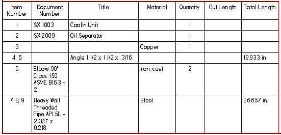
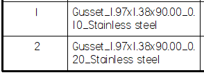
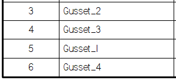

Options tab (Parts List Properties dialog box)
The Options tab is where you specify what type of parts list to generate. The availability of options is based on the type of assembly model (standard assembly or family of assemblies) and the components it contains. To learn more, see the Help topic, Using the Options page.
- Item Numbers
-
- Use assembly generated item numbers
-
Specifies that the item numbers displayed in the parts list are derived from the assembly.
If assembly item numbers are not available, then the item numbers are generated dynamically when the parts list is created.
Note:Assembly item numbers are created when the Maintain item numbers check box is selected on the Item Numbers page (Solid Edge Options dialog box) in the assembly model.
- Start with item number
-
Specifies the first number for the item numbers in the parts list.
- Increment by
-
Specifies a positive integer as the item number increment value.
- Mark unballooned items
-
Specifies that items that are not ballooned are marked in the parts list. You can change the default marker, which is an asterisk (*).
Balloons are not added to parts that are not visible in the selected drawing view. Nor are they added when an Auto-Balloon option on the Balloon page limits duplicates.
- Renumber items/balloons according to sort order
-
Renumbers the parts list entries and balloons based on the sort criteria you specify, using the start number and the increment value.
Use this option when items are added to or deleted from the parts list.
Note:If this option is selected, you cannot edit the parts list item numbers on the Item Number tab.
- Show These Components in the Parts List
-
- Parts
-
Specifies that parts are shown in the parts list.
- Pipes
-
Specifies that pipes are shown in the parts list.
- Pipe fittings
-
Specifies that pipe fittings are shown in the parts list.
- Frame members
-
Specifies that frame members are shown in the parts list.
- Tubes
-
Specifies that tubes are shown in the parts list.
- Component Type sort priority
-
Specifies the sort order of the component types in the parts list.
- Move Up
-
Moves the selected component type up in the Component Type Sort Priority box.
- Move Down
-
Moves the selected component type down in the Component Type Sort Priority box.
- Tube Uniqueness
-
Specifies how you want to determine the uniqueness of rigid and adjustable tubes and hoses. If no option is selected, then only the element cross-section is used.
- Flat length
-
Specifies that tube flat lengths (cut lengths) are used to identify the uniqueness of adjustable (flexible) tubes and hoses. Use the Flat Length option when you want to determine the length to cut from your raw material. When selected, tube length uniqueness is determined by this criterion as well as element cross-section.
A flat length value displayed parenthetically ( ) indicates an approximate value. For example, (406.83 mm) is an approximate value.
- Mass
-
Determines whether two tubes are unique based on their item mass.
- Mark ambiguous values with
-
Specifies that when there is more than one unique value for a cell, that it is marked with the character(s) in the text box. The default marker is an asterisk (*).
This option applies to calculations for flexible tubes and hoses. It is possible that there are two items on the same row with values that are only slightly different.
- Frame and Piping Uniqueness
-
For the purpose of generating a parts list on an assembly drawing, these check boxes specify the criteria to use to compare individual structural frame members and pipes to determine whether they are the same or different. If none of these options is selected, the element cross-section is used to determine uniqueness.
- Cut length
-
Determines whether cut lengths are unique based on the final length of the frame member or pipe. If an element is nonlinear, such as a bent frame, then the path length is used to determine cut length.
Note:A cut length value displayed parenthetically ( ) indicates an approximate value. For example, (406.83 mm) is an approximate value.
- Mass
-
Determines whether two elements are unique based on their item mass.
Note:Leave all boxes unchecked to produce the roughest calculation, similar to a total lengths parts list.
- End Angles
-
Determines the uniqueness of end angles for pipes and frames. Before version SE2020, this option was named Miter.
This option applies to the following properties used in the Parts List column:
-
Miter Cut 1
-
Miter Cut 2
-
End Angle 1 (Side Face)
-
End Angle 2 (Side Face)
-
End Angle 1 (End Face)
-
End Angle 2 (End Face)
- Use angle direction
-
When checked, the uniqueness is based on the angle direction.
-
- Mark ambiguous values with
-
Specifies that when there is more than one unique value for a cell, that it is marked with the character(s) in the text box. The default marker is an asterisk (*).
This option applies to calculations for frames, pipes, and rigid tubes. When determining the mass, miter angle, or cut length, it is possible that there are two items on the same row with values that are only slightly different.
- Show Angles based on direction
-
Specifies how you want to show the angles in the report.
- +/- Degrees
-
Displays the rotation angle in degrees.
- CW/CCW Degrees
-
Displays the rotation angle in degrees and clockwise/counterclockwise direction.
- Show custom string if frame end is non planar:
-
Displays a custom string if the frame end is non-planar.
There is no defined maximum length for this field.
- Pipes and Frames
-
- Pipe rough end cut end clearance
-
Specifies the pipe rough cut end clearance. This value is added to each end of each piece of pipe. It is accounted for in a cut length list and in a total length list.
Suppose the exact length of a piece of pipe is 36 inches, and the parts list needs to display a rough-cut value of 36.5 inches. Use the Pipe rough cut end clearance box to specify a value of .25 inches.
- Frame rough cut end clearance
-
Specifies the frame rough cut end clearance. This value is added to each end of each frame. It is accounted for in a cut length list and in a total length list.
- Create a total length parts list
-
Specifies that a parts list showing total lengths rather than cut lengths is created. A total length parts list typically is used for purchasing. This is because it shows all members of a specific pipe or frame on the same line, rather than showing each item on a separate line.
A total length list applies only to parts lists generated for models containing piping and structural frames.
To display content in the total length parts list, you also must add a Total Length column. See Create a total length parts list.
- Item number separator
-
Specifies up to 100 separator character(s) to be inserted between item numbers on the same line of a total length parts list. You also can use separators between multiple values displayed in a single cell. For example, if the parts list has a column for custom occurrence properties, such as bolt IDs, you can show all of the values for the bolt IDs for that item in a single cell.
Example:In this parts list example, which includes both piping and structural members, a two-character separator is used in the Item Number column: a comma followed by a space.

- Convert deleted parts into user defined rows
-
Prevents parts list item number rows from being deleted automatically when the corresponding part or subassembly is deleted from the model and the parts list is updated. You can delete the row manually, if desired.
When this option is unchecked, the parts list rows are deleted automatically.
Note:As a user-defined row, the item number is preserved, but it is no longer associative to the model. Because item numbers are reused by the assembly when new parts are added, this may result in duplicate item numbers.
- Show custom string if value in quantity column is zero
-
In a Family of Assemblies (FOA) parts list, specifies any alphanumeric string to display in the Quantity (Member Name) column when its value is zero.
When this option is selected, the string defined in the adjacent box is displayed instead of a zero. For example, you can enter N/A, Not Applicable, or use the default (—). There is no defined maximum length for this field.
In the Family of Assemblies Parts List Properties dialog box, this string also appears in the Quantity (Member Name) columns on the Data tab.
- Gusset Plate Uniqueness
-
When generating an assembly bill of material report and a parts list on an assembly drawing, these check boxes specify the criteria to use to compare individual gussets to determine whether they are the same or different.
- Mass
-
Determines whether two elements are unique based on their item mass.
- Cutting stock (bounding box) parameters
-
Specifies that you want to create the gusset name to include Cutting Stock parameters.
- Gusset Parameters
-
Specifies that you want to create the gusset name to include Gusset parameters.
- Naming
-
Displays the conventions used to create the gusset name displayed in the report.
Because similar gussets are shown in a single row, you must specify the names of gussets in the row. To uniquely name the gussets, you can use a user-defined prefix, along with the Material and Thickness parameters .
For example, for a stainless steel triangular gusset of 1.97 x 1.38, with a 90 degree angle between d1 and d2 and a thickness of 0.10, the entry in the parts list would be:

If you leave the first field set to Gusset and set the second field to Number, the third and fourth are disabled and the entry in the parts list shows only Gusset appended by the gusset number.
